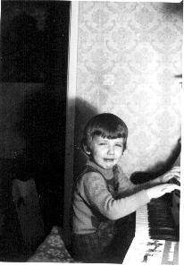

Jestem studentem informatyki i matematyki na wydziale MIM UW.
to ja z Mama jak bylem maly
Jestem zwiazany z Zakladem Logiki Stosowanej i naleze do KNI.
Interesuje sie logika, jezykami funkcyjnymi, topologia algebraiczna, teoria mnogosci, teoria zlozonosci, semantyka denotacyjna, algebra abstrakcyjna, topologia ogolna,
odkrywaniem, ogladaniem i zmienianiem roznych rzeczy,
teoria kategorii, teoria dziedzin, rachunkiem lambda, podstawami matematyki, filozofia nauki, teologia, antropologia, muzyka

jak mam czegos za duzo to sie do tego zniechecam